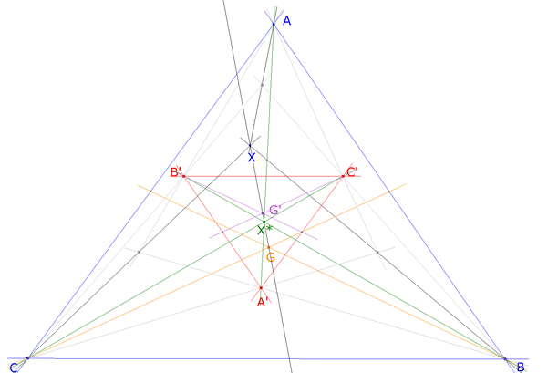
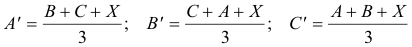
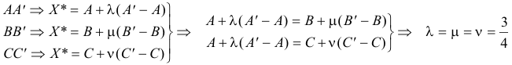
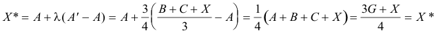
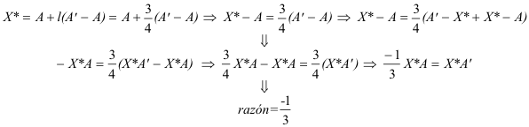
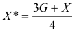
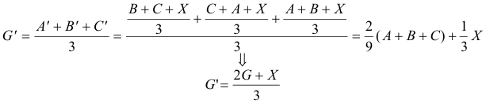
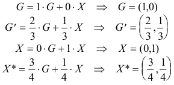
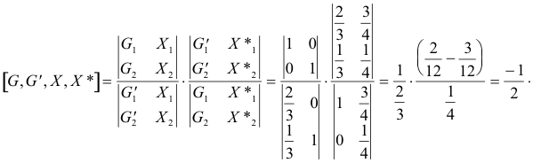

Problema 274 Sea X un punto arbitrario del triángulo ABC. Construimos los puntos C´, B´, A´, como los centros de gravedad de los triángulos ABX, AXC y BXC. Sea X* el punto de intersección de las rectas AA´, BB´, y CC´ .Se pide : a) El triángulo A´B´C´ es homotético al triángulo ABC, Calcular el centro y la razón de la homotecia. b) Si G, y G´son los centros de gravedad de los triángulos ABC, y A´B´C´, respectivamente, probar que los puntos G,G´,X y X* son colineales, y, calcular su razón doble. Romero, J.B. (2005): Comunicación personal Solución de José María Pedret, Ingeniero Naval. Esplugues de Llobregat (Barcelona). (2 de octubre de 2005) |
|
SOLUCIÓN |
|
 figura 1
|
|
APARTADO (a)
 Si los triángulos son homotéticos el centro de homotecia se encuentra en la intersección común de AA’, BB’, CC’. Es decir, si existe la homotecia el centro de homotecia es X*. Veamoslo:
 Por lo tanto existe un punto X* de intersección y único de las tres rectas AA’, BB’, CC’
 Además se cumple
 Al mismo resultado llegamos con BB’ y con CC’.
|
|
APARTADO (b) Del apartado anterior
 Hemos comprobado que X* es combinación lineal de G y X; es decir, X* está alineado con G y X. Veamos ahora G’
 Por lo tanto G’ también está alineado con G y X, al igual que X*. Podemos pues escribir
 Podemos pues fácilmente calcular la razón doble
 |